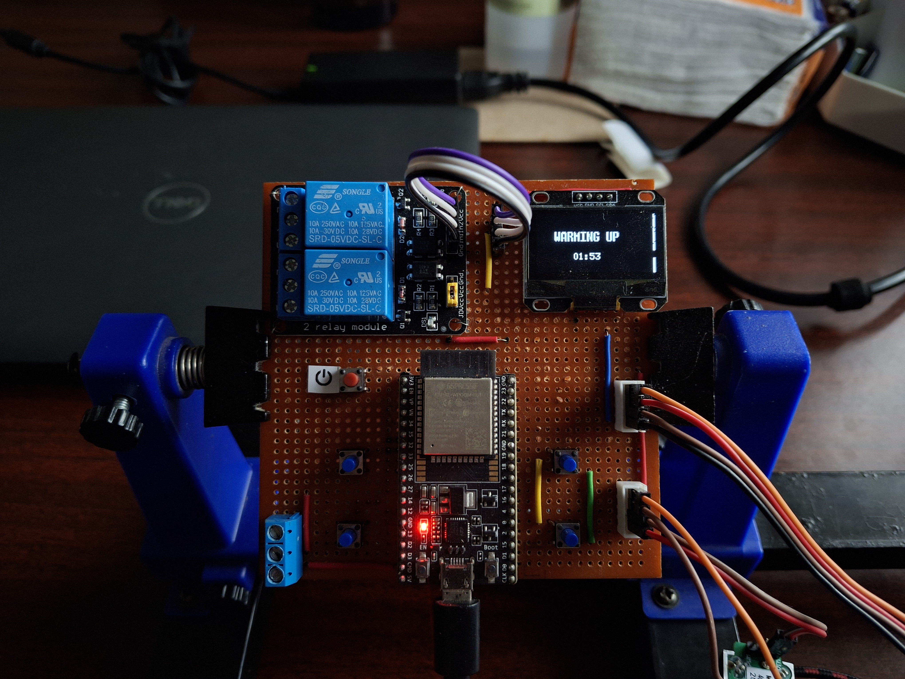
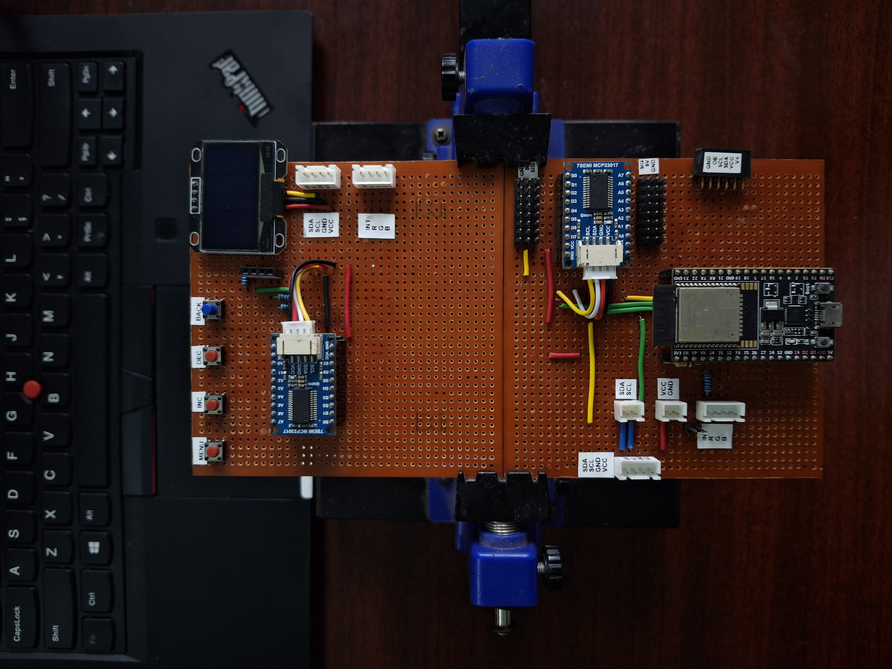
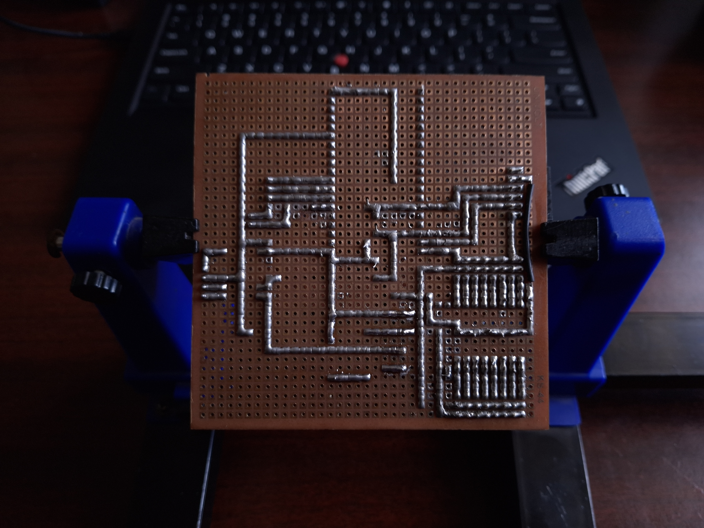

Sanjay Sathyamoorthy
Electronics & PCB Design Engineer | Embedded Systems | IoT Automation
Associate Electronics Engineer with hands-on experience in PCB design, embedded hardware, and IoT-based agricultural automation. Skilled in KiCad, Altium Designer, and Proteus, with a focus on rugged, field-replaceable prototyping.
View ProjectsAbout Me
I'm Sanjay Sathyamoorthy, an Electronics and Communication Engineering graduate (Rajalakshmi Institute of Technology, Chennai, CGPA 8.25) now working as an Associate Electronics Engineer at Akaththi Farms. I specialize in PCB design and embedded hardware, with daily hands-on experience in KiCad, Altium Designer, and Proteus — from datasheet-driven component selection through schematic capture, layout, hand-soldered prototyping, and field testing.
My current work focuses on a modular sensor / actuator / power-grid / HMI node system for agricultural automation, operating in harsh environments (up to 95% relative humidity). Components are selected for humidity tolerance and field-replaceability, with all modules designed as plug-and-play units using JST connectors.
Earlier, during my internship at the Variable Energy Cyclotron Center (VECC), Kolkata, I worked on an FPGA-based humidity and temperature sensor system for gas detection, achieving 99% accuracy in real-time monitoring. I've also completed Udemy certifications in PCB Design with KiCad and PCB Design with Altium Designer.
Experience
Associate Electronics Engineer
January 2025 – PresentAkaththi Farms
- Select components by analyzing sensor datasheets and prepare ADR documentation; design circuit architecture, pin mapping, and power-constraint planning for efficient performance in harsh field conditions (up to 95% RH).
- Develop schematic designs and PCB layouts using KiCad, optimizing for reliability, plug-and-play field replacement, and production readiness.
- Hand-solder and prototype on perfboard across multiple design iterations (10–15 board revisions) before finalizing PCB layouts; assist in testing and troubleshooting circuits.
- Migrated inter-node communication from I2C to RS485 (v2) after diagnosing signal noise on long cable runs — improving reliability for distributed field deployment.
- Contribute to sustainable farming automation, building distributed sensor, actuator, power-grid, and HMI nodes.
Electronics Intern
July 2023 – August 2023Variable Energy Cyclotron Center (VECC), Kolkata
- Worked on "Design of FPGA-Based Humidity and Temperature Sensor for Gas Detector."
- Implemented a real-time monitoring system for atmospheric temperature and humidity, achieving 99% accuracy in the gas detector.
- Designed and built the PCB using Proteus.
Projects
Modular Agricultural Automation Node System
Designed a 4-node distributed system — Sensor, Actuator, Power Grid, and HMI — for agricultural automation in a high-humidity environment (up to 95% RH). Iterated across 10–15 hand-soldered perfboard prototypes built around ESP32 controllers.
- Selected components via datasheet review for humidity tolerance and field-replaceability; all modules (I/O expanders, level converters, relay drivers, sensors, actuators) designed as plug-and-play units via JST connectors.
- Used MCP23017 GPIO expanders to scale I/O for an OLED + button-based HMI menu interface.
- Migrated the inter-node communication bus from I2C to RS485 (v2) after diagnosing noise on long cable runs, improving field reliability.
- Hand-soldered and traced all prototypes on dotted perfboard prior to KiCad PCB layout.
Tools Used: KiCad, ESP32, MCP23017, RS485/I2C, hand soldering



IoT-Based Inverter Monitoring and Control
Final-year project: developed an advanced inverter system with a lithium-ion battery and ferrite-core transformer.
- Achieved a 20% increase in efficiency and a 15% reduction in overall system size.
- Designed the PCB layout in Proteus, optimizing component integration for a 30% improvement in performance.
- Integrated IoT for remote monitoring, improving power output accuracy by 25% and reducing operational downtime by 10% through real-time adjustments.
Tools Used: Proteus, Python, IoT integration
FPGA-Based Humidity & Temperature Sensor for Gas Detection
Developed a real-time atmospheric monitoring system as part of an internship at VECC, Kolkata, achieving 99% accuracy.
Tools Used: Quartus Prime, Proteus
PCB Design for Various Circuits
Designed multiple PCB layouts for electronic circuits ranging from small-scale to complex multi-module systems, applying skills developed through Udemy certifications in KiCad and Altium Designer.
Tools Used: KiCad, Altium Designer, Proteus
Skills
Daily Tools & Core Skills
PCB Design
KiCad 8, Altium Designer, Proteus 8
Embedded Hardware
ESP32, GPIO expanders (MCP23017), datasheet-driven component selection
Communication Protocols
I2C, RS485, JST connector systems
Prototyping
Hand soldering, perfboard layout & iteration, circuit testing & troubleshooting
Programming
Python (beginner), C (beginner)
Exposure To
FPGA Design
Quartus Prime, Verilog/VHDL (beginner, via coursework & VECC internship)
Microcontroller Tools
Keil uVision5
Education
Bachelor of Engineering, Electronics & Communication Engineering
Graduated May 2024Rajalakshmi Institute of Technology, Chennai
CGPA: 8.25 / 10
Higher Secondary Certificate (HSC)
March 2020Shanthinikethan Matriculation Higher Secondary School, Vellore
67.8%
SSLC
March 2018Shanthinikethan Matriculation Higher Secondary School, Vellore
82.8%
Certifications & Workshops
PCB Design with KiCad
Udemy
- Learned schematic capture and PCB layout techniques in KiCad.
- Applied directly to current PCB design work at Akaththi Farms.
PCB Design with Altium Designer
Udemy
- Learned schematic capture and PCB layout techniques.
- Gained hands-on experience creating manufacturing files.
- View Certificate
Quartus Prime Lite Software Training Workshop
- Facilitated a 2-day training on Quartus Prime Lite for FPGA programming.
ICRTICPT 2022 Conference
- Presented a paper on "Internet of Things" to 200+ professionals and academics.
Flex Electronics Industrial Visit
- Gained in-depth knowledge of PCB assembly and manufacturing processes.